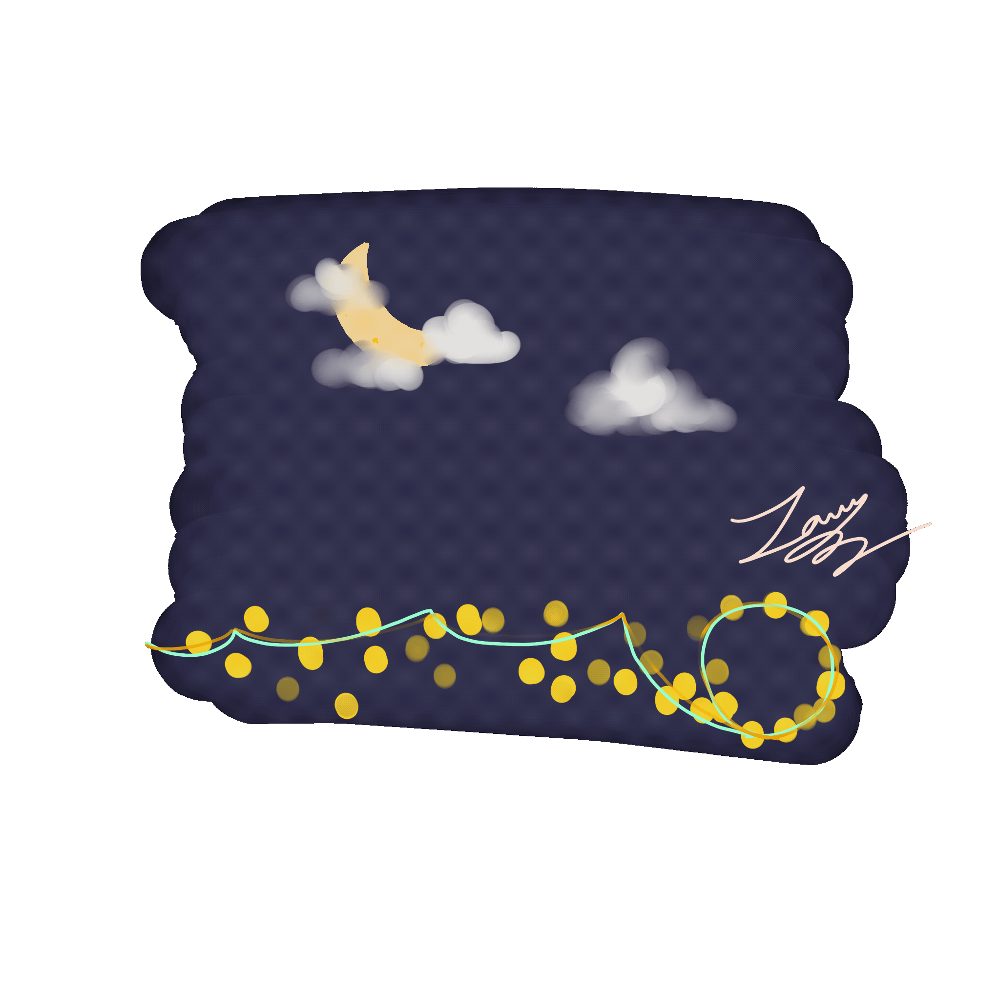
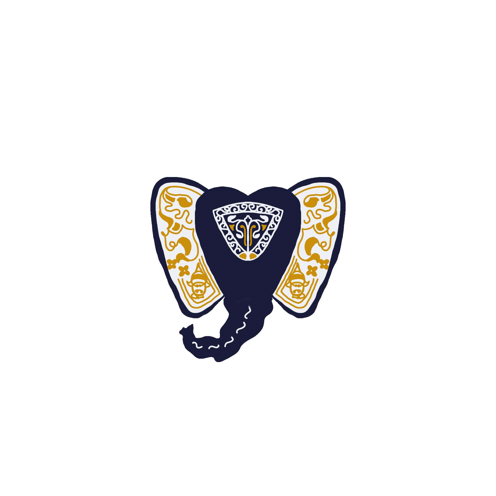
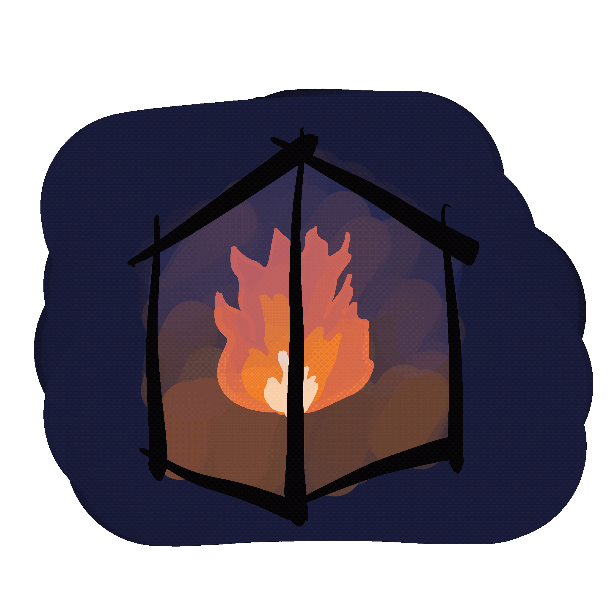
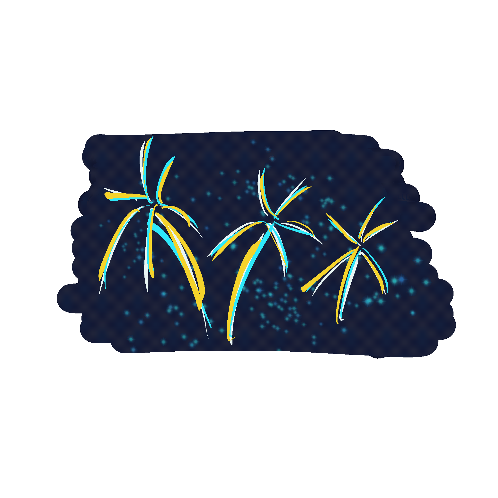

Yay Kyaw Night Market

Yay Kyaw Night Market occurs in the city of Yangon. The block of Yay Kyaw township is blocked and a Ferris wheel, carousel, ghost houses, and many carnival events occur along with thousands of traditional food stalls, clothes and anything you wish is sold there.
Kyout Sal Elephant Dance

Kyout Sal Elephant dance festival dates back to the Bagan period where it is celebrated to honor the elephants that carry the relic Buddha. It is celebrated at the day before the full moon day of Thadingyut.
Mee Mwyae Pwae

Lantern

Lanterns are one of the modern ways of observing the Thadingyut ceremony. When Buddha descended from Heaven, ancient people welcome him with oil lamps and this lanterns are a depiction of this ceremony.
Hot Air Balloons

Fire crackers

A twist of modernity, fire-crackers a Chinese invention is later use in Thadingyut as a form of celebration along fireworks to celebrate this ceremonious event.